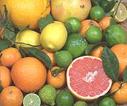
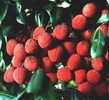
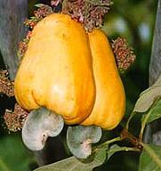
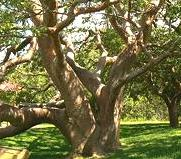
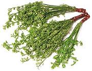

SAFARI
Users
Citrus Family -
[Rutaceae]

The highly aromatic Rutaceae family (named for the bitter herb
Rue), is most familiar from the genus
Citrus and often called the Citrus family. Several other genera
have a less prominent role in culinary affairs. The common edible citrus
varieties are all tropical or subtropical and of Asian origin. The
Citrus Family has its own page.
Soapberry Family -
[Sapindaceae]

The Soapberries are a diverse family of temperate to
subtropical trees, shrubs and lianas (vines), a few of which have some
significance as food - and others as cleansing agents.
Photo of lychees on tree by U.S. Department of Agriculture = public
domain.
The Soapberry Family has its own
page.
Cashew / Mango Family
- [Anacardiaceae]

The Cashews are a medium sized family of resinous trees
and plants, mostly tropical but some temperate. Some provide highly
prized edible fruit, but many have an irritant in their sap which causes
rashes in humans, poison ivy being the most notorious.
Cashew fruit photo from United States Agency for International
Development - public domain.
The Cashew / Mango Family
has its own page.
Torchwood Family -
[Burseraceae]

The Torchwood family is a modest sized family of very resinous trees.
Many are famous for resins used medicinally, as incense and for various
industrial purposes, but the family does provide a few culinary items
The Torchwood Family has its own
page.
Mahogany Family -
[Meliaceae]

The Mahogany family is more familiar for wood used in boats and fine
furniture than as food, but a few varieties are of culinary value. A
number of these trees bear edible fruit, which is enjoyed in the
regions where the trees grow, but is seldom exploited commercially,
and even then mostly on a local scale.